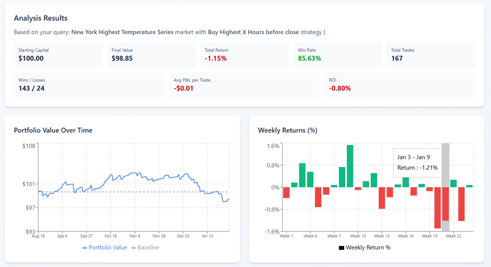

User Experience
Prediction markets are a new kind of financial market where you trade on the outcome of real-world events, not stocks or commodities, but things like whether New York's highest temperature will exceed 70°F on a given day. Each contract pays out $1.00 if the event happens and $0.00 if it doesn't. (You may buy as many of these contracts as you wish.) The price of a contract at any moment reflects the market's collective probability estimate of that outcome. This app gives you a way to explore whether simple trading strategies can find an edge in those markets.
What It Is
This is a backtesting tool for Kalshi prediction markets. Backtesting means taking a trading strategy and running it against historical data to see how it would have performed, before risking any real money. You select a market, choose a strategy, and the app tells you exactly how that combination would have played out over the last 100 days of real Kalshi market data.
The markets available span daily temperature predictions for major U.S. cities: New York, Miami, Chicago, Los Angeles, Denver, Philadelphia, Austin, and Washington D.C. as well as a range of international sports leagues. Each temperature market runs the same way: several contracts per day, each representing a different temperature threshold, one of which resolves to yes and the rest to no.
Why You'd Use It
If you're new to prediction markets, it can be hard to know where to start. Should you bet on the most likely outcome? The least likely? Does it matter how many hours before the market closes you place your trade? These are the questions this tool is built to explore.
Rather than learning by losing money, you can experiment here first. Try the same strategy on different cities. Change the timing. Bet on the least or most likely outcome. The app is designed to give you fast and clear feedback.
How It Works
Using the app takes three steps. First, you pick a market. Second, you choose a trading strategy from the eight available options. Third, for most strategies, you set how many hours before market close the trade executes.

Figure 1 demonstrates output for an example query. The results come back immediately. You see your starting capital of $100 tracked against the final portfolio value, your win rate, total Profit & Loss, average return per trade, and Return On Investment. The two charts put those numbers in context: the portfolio value curve shows how the strategy performed over time and the weekly returns bars show where the gains and losses were concentrated.
None of these strategies are guaranteed to make money. Prediction markets are efficiently priced, and finding an edge is incredibly difficult, especially over longer periods of time. The app gives you the tools to find out if you can.